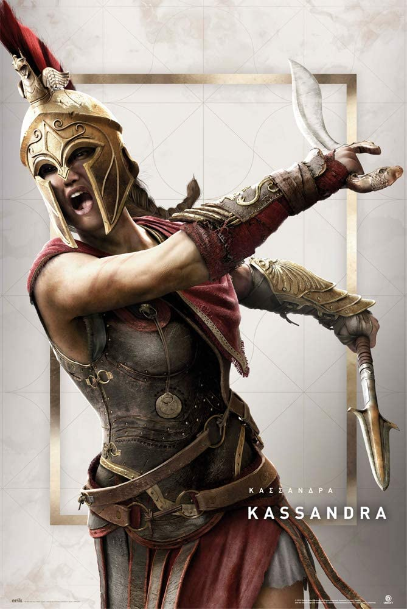
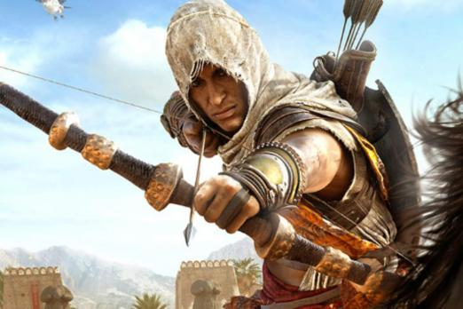
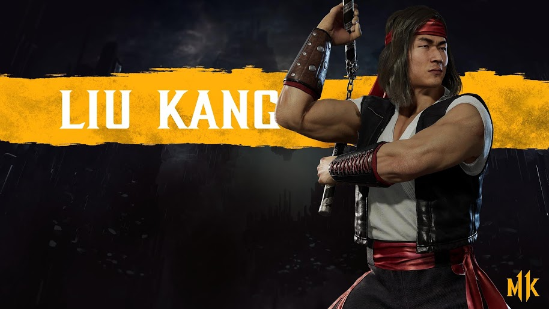
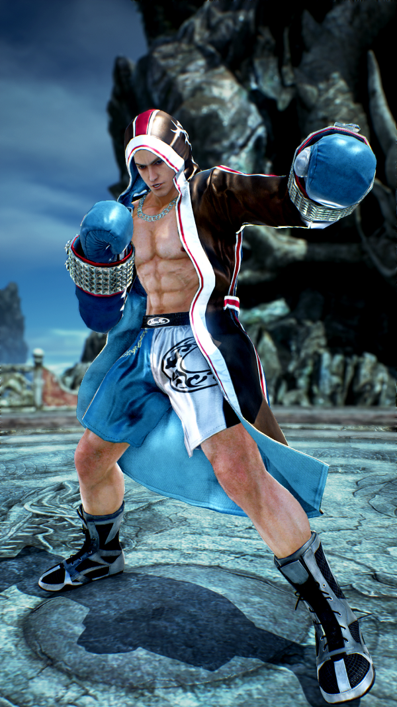

Background: Alexios (451 or 446 BCE – 422 BCE), also known as Deimos, was a member of the Cult of Kosmos, a organization based in ancient Greece and a Tainted One. Alongside his half-sister, the famed misthios Kassandra, he was the grandson of King Leonidas I of Sparta through his mother, Myrrine.
Background: Kassandra (458 or 453 BCE – 2018 CE), also known as the Eagle Bearer, West Wind, or Keeper, was a Spartan mercenary who fought during the Peloponnesian War.
Background: Bayek of Siwa (born c. 85 BCE), also known by the alias Amun, was one of the last Medjay of Egypt and the founder of the Hidden Ones alongside his wife, Aya.
Background: Princess Kitana is 10,000 years old, but is considered young in her realm of Edenia and has the appearance of a young woman. Throughout the years, she rose to great importance; first as the loyal stepdaughter of Shao Kahn, then as his enemy, tearing herself away from his grasp and freeing her home realm of Edenia. She also led an army into Outworld to combat any chance of Shao Kahn rising to power again.
Background: Liu Kang is one of the most popular and accessible characters in the series. He is one of Earthrealm's greatest warriors, having defeated many to prove his valor. Throughout the series, he has been gradually portrayed as the main hero, becoming champion after the first Xtream Chaser tournament.
Background: After reclaiming the Mishima Zaibatsu from his son and witnessing the power of the Devil firsthand in the second King of Iron Fist Tournament, CEO Heihachi Mishima began his own research into the terrifying power of the Devil Gene. What was found out, was that the Devil Gene only appeared naturally on rare individuals and could grant its owners an immense boost in power by instantaneously activating the body's own cells. Trying to replicate this superhuman strength, the Mishima Zaibatsu started a genetic modification plan with the goal to replicate the effects of the gene on regular humans.